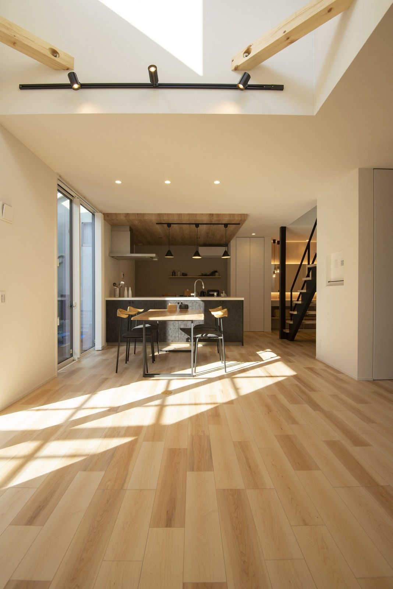
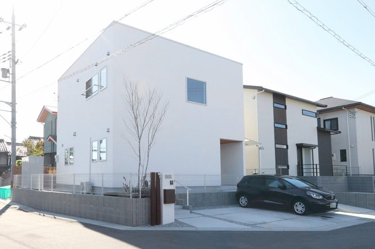
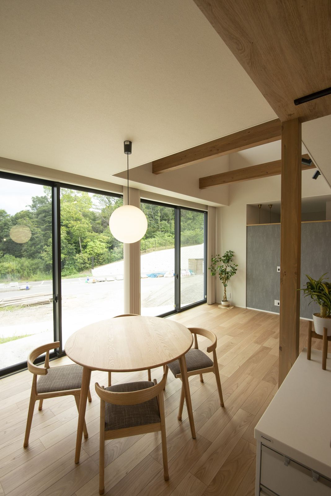
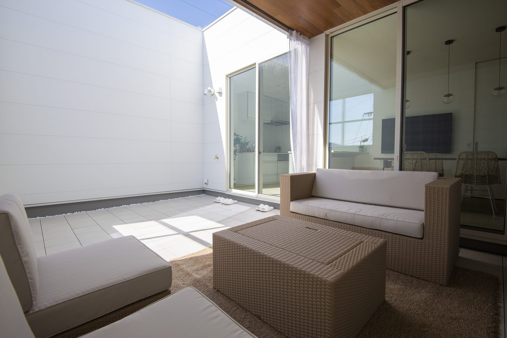

私が土地をご案内するときに、よくお伝えするのが「冬にもう一度見てください」です。
夏と冬では、太陽の高さがまるで違います。
夏に明るかった土地が、冬の昼には隣の家の影に入っていることがあります。
10月から2月は、冬の日当たりを確かめられる時期です。
土地を決める前に見ておく点をまとめました。

冬は太陽が低いぶん、日差しが部屋の奥まで届きます。
奈良の冬至の太陽は、夏至の半分以下の高さ
奈良市（北緯34.7度）の正午の太陽の高さを、季節ごとに並べました。
影の長さは、平らな土地で、正午に真北へ伸びる長さです。
2階建ての家の高さを約7mとすると、影の長さはこう変わります。
南隣の家から10mほどしか離れていない土地は、冬至の正午に1階の窓まで影が届くことがあります。
夏に見たときは、同じ場所に影はほとんどありません。
夏や秋に土地を決めた方が、冬に入ってから気づくのはこのためです。
朝と夕方は、影がもっと伸びる
冬至の午前9時と午後3時は、太陽の高さが約18度まで下がります。
影は建物の高さの約3倍になり、2階建てなら20mを超えます。
この時間は太陽が南東と南西にあるので、東隣と西隣の建物の影も土地にかかります。
朝日が入るか、午後の日が残るかは、南だけでなく東と西も見て決まります。
土地を見に行くときに、確かめる3つ
3つ目は見落としやすいところです。
今は日が当たっていても、南の空き地に3階建てが建てば冬の日当たりは変わります。
建てられる建物の高さは、その場所の用途地域で決まります。
たとえば第一種低層住居専用地域では、建物の高さは10mか12mまでに制限されています。
市町村の都市計画の地図で確かめられます。

土地探し攻略法土地を決めるまでの順番を、6つにまとめました。

前が開けていれば、床までの大きな窓をそのまま生かせます。
日当たりの弱い土地でも、建て方で光は取れる
南側に家が近い土地でも、すぐにあきらめることはありません。
建て方を変えると、光を取り込めることがあります。
- 2階にリビングを置く
影が届きにくい2階で、昼間を過ごします - 天窓や高い窓をつける
隣の家の屋根より上から、光を入れます - 中庭をつくる
家の真ん中に、空に向けて開いた庭を取ります

まわりの視線を気にせず、上から光を取り込んでいます。
ただ、どの方法も建築費は上がります。
日当たりのよい土地と、少し安い土地に光を取る工夫を足した場合とで、合計がいくらになるかを並べて比べてください。
よくある質問
冬に土地を見に行けない場合は、どうすればいいですか？
南側の建物の高さと、土地からの距離が分かれば、冬至の影がどこまで届くかは計算できます。
奈良では冬至の正午で、建物の高さの約1.6倍まで影が伸びます。
土地を見に行くときに一緒に測れば、その場でお伝えします。
南向きの土地でないと、日当たりは悪いですか？
そうとは限りません。
北側に道路がある土地は、家を北に寄せて南に庭を取れるので、南の隣家と距離をとりやすくなります。
南側に道路がある土地でも、道路の向こうに高い建物があれば冬は影に入ります。
向きよりも、南側に何がどれだけ離れて建っているかで決まります。
夏の日差しが強すぎることはありませんか？
奈良の夏至の正午、太陽の高さは約79度です。
ほぼ真上から差すので、南の窓は軒や庇で日差しを遮れます。
冬は約32度と低いので、同じ窓から部屋の奥まで日が入ります。
まとめ
- 奈良の冬至の正午、太陽の高さは約32度。
夏至の約79度の半分以下です - 2階建ての影は、冬至の正午で約11m伸びます
- 朝9時と午後3時は、影が建物の高さの約3倍になります
- 見るのは、時間・南側の建物の距離・南の空き地の3つです
- 日当たりの弱い土地は、2階リビング・天窓・中庭で光を取れます